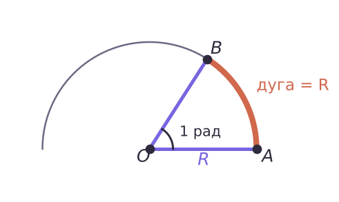
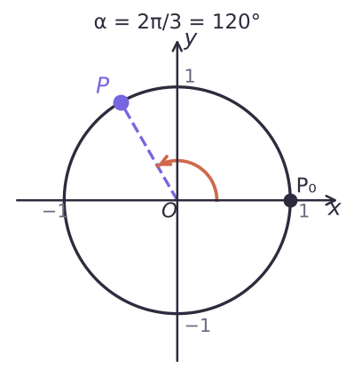
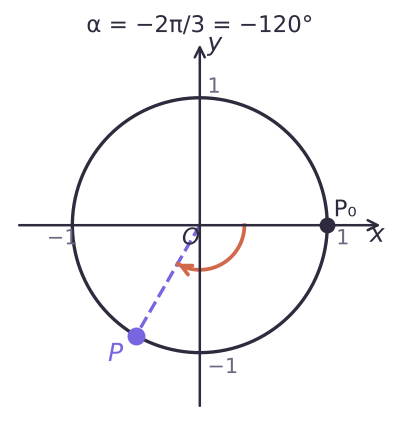
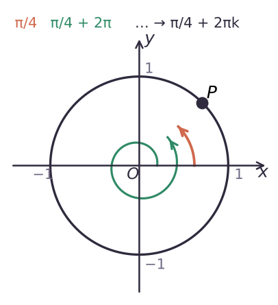

Радиан, единичная окружность, поворот точки

15° = π/12 · 3π/4 = 135° · 1 рад ≈ 57°
| 0° | 30° | 45° | 60° | 90° | 120° | 135° | 150° | 180° |
|---|---|---|---|---|---|---|---|---|
| 0 | π/6 | π/4 | π/3 | π/2 | 2π/3 | 3π/4 | 5π/6 | π |
l = αR · S = αR²/2 (α — в радианах)
R = 6, α = 60° = π/3: l = 2π, S = 6π


π/4 + 2πk, k ∈ Z

Радианы, дуга, сектор, поворот точки